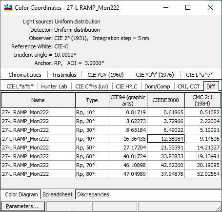
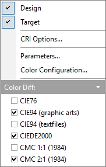
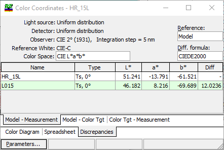
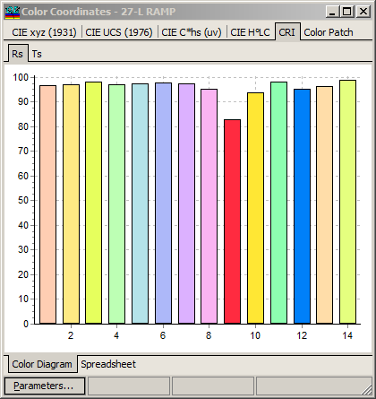

Color Evaluation
Color Evaluation
Navigation: OptiLayer Menu Commands > Analysis Menu >
Color Evaluation
` <idh_digitize.html>`__ ` <idh_menu_analysis.html>`__ ` <idh_color_evaluation_parameter.html>`__
The Color command in the Analysis Menuinitiates the color evaluation analysis tool. When this command is activated, a dialog window labeled Color Evaluation Parameters appears. After confirming the choice of parameters, the color coordinates of the design can be calculated. You can view the color coordinates in either graphical or tabular form by selecting “Color Diagram” or “Spreadsheet” pages, respectively. In Spreadsheet mode, the window displays the results of evaluating the color coordinates for the current design. The “Additional Discrepancies” tab allows you to view the differences between:
Model and Measurement
Model and Color Target
Color Target and Measurement
at the respective sub-tabs.
The light source, detector, observer, integration step, reference white, and incident angle used for color evaluation are shown in the upper part of this window. The Light source and detector can be changed using corresponding databases. Other options that affect color evaluation can be altered using the Colortab in the General Configuration dialog.
By selecting different tabs, it is possible to view calculated color characteristics related to different color spaces and other values. Available characteristics include:
x, y, z chromaticities and luminosity
X, Y, Z tristimulus values
u, v, Y values as defined by CIE YUV (1960)
u’, v’, Y values as defined by CIE YU’V’ (1976)
u* v*, L* values as defined by CIE Lu***v* color space
a*, b*, L* values as defined by CIE La***b* color space
a, b, L values in Hunter Lab
C*, h*(uv), s(uv) values (CIE)
H°(ab), L*, C*(ab) values (CIE)
Dominant, Complementary wavelengths, and Excitation purity (Dom/Comp tab)
Correlated Color Temperature, Color Rendering Index, and Duv (CRI, CCT, Duv tab).
The “Diff” tab is essentially designed to provide a detailed and comparative analysis of color discrepancies, which helps in fine-tuning the color parameters to match the Anchor point or maintaining quality across batches of production. This feature is invaluable when precision in color reproduction is critical.

Color difference formulas included in this calculation can be configured with the right-click menu.

On the Discrepancies tab, it is also possible to select different color difference formulas (see https://en.wikipedia.org/wiki/Color_difference).
The Discrepancies tab with sub-tabs is shown below. In each sub-tab, it is possible to select what will be used as a reference when computing color differences.

In Color Diagram mode, the availability of different types of diagrams allows for a varied visual representation and analysis of colors based on different color spaces. Each diagram serves specific purposes and helps in understanding various aspects of color behavior and differences. Here’s a brief overview of each type mentioned:
CIE xyz (1931) Chromaticity Diagram: This diagram is based on the CIE 1931 XYZ color space. It is a fundamental color space that forms the basis of most other color spaces. The diagram helps in visualizing color as perceived by the human eye, plotting luminance (Y) and chromaticity coordinates (x and y).
CIE UCS (1976) Diagram: The Uniform Chromaticity Scale (UCS) diagram, created to improve the uniformity of the CIE 1931 xyz diagram. Colors in this diagram are more evenly distributed, making it easier to interpret differences in chromaticity.
CIE C*hs (uv) Diagram: This diagram represents the cylindrical version of the CIELUV color space. It plots chroma (C) and hue (hs) in a polar coordinate system, with the (u’, v’) coordinates defining the colorfulness relative to the brightness of a similarly illuminated white.
CIE H°LC Diagram: This is often used with the CIELCH color space, where colors are represented in terms of Hue (H°), Lightness (L), and Chroma (C). This diagram helps in understanding the color relationships and transformations in a more perceptual way, reflecting human color vision.
CIE L*a*b* Diagram: Based on the CIELAB (see https://en.wikipedia.org/wiki/Lab_color_space) color space, this diagram shows colors in terms of their lightness (L) and their position along the a (from green to red) and b (from blue to yellow) axes. It is very useful for visually representing color differences and is widely used in color measurement due to its perceptual uniformity. It is recommended to select L* close to values of Design color, Measurements color, or Color Target in order to have consistent color representation.
Each of these diagrams provides unique insights and tools for color analysis, suitable for various applications ranging from digital imaging and printing to textiles and coatings. Depending on what aspect of color you are investigating or processing, you may choose one diagram over another to get the most accurate or useful representation for your needs.
The crosses indicate the values of color coordinates for the characteristics shown in the spreadsheet. The display of additional features on the diagram is controlled by the settings in the Color Evaluation Parameters dialog. Some of these additional features are not applicable to CIE C*hs (uv) and CIE H°LC diagrams. If a Color Specification is loaded, it is additionally shown by closed curves, as illustrated in the figure below.
If you want to re-run the Color Evaluation procedure with different settings, press the “Parameters…” button to set the Color Evaluation Parameters and restart the color evaluation procedure.
The Color Rendering Index (CRI) tab in lighting software measures how accurately a light source illuminates colors in comparison to a natural light source. The CRI is a crucial metric in various industries including photography, cinematography, interior design, and manufacturing where color fidelity is important.

The Color Patch tab displays colors corresponding to selected characteristics. If a range of incident angles is selected, the color patch displays the transition of colors as the angle changes within specified limits.